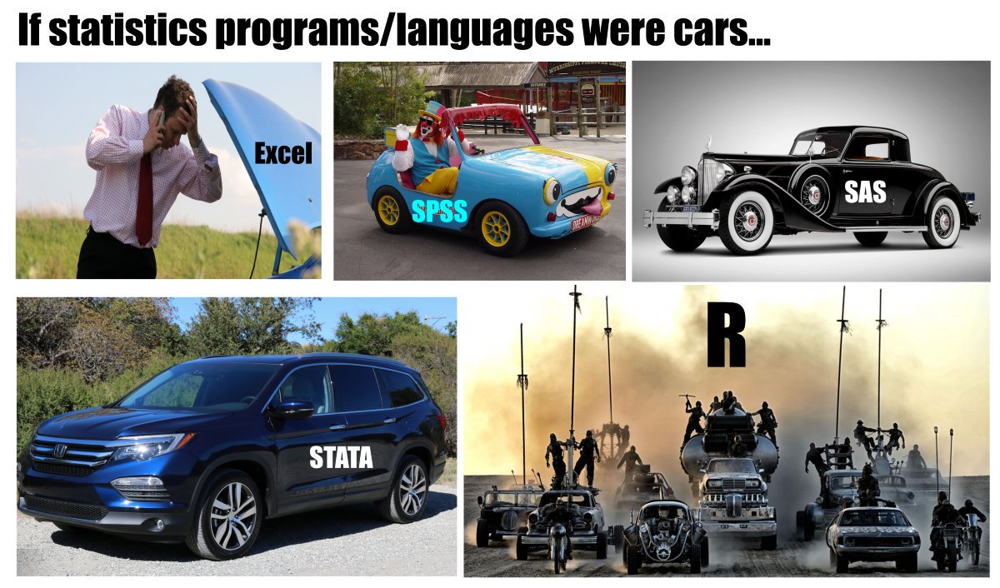

a <- 12Starting up R

Warning
As the image above suggests, the software we will use in this class is Exciting and a bit Dangerous!
The R ecosystem
R is an open-source programming language1 that has a well developed system for user contribution. This means that it is possible to write extensions, these are also called packages. Packages contain specialized programs designed to solve different tasks.
The R software, together with packages can be found at CRAN, the Comprehensive R Archive Network. You can access CRAN from R.
RStudio
RStudio is an Integrated Development Environment. This software makes it easy to “talk” to R by keeping track of your files, any data stored in your computers memory and so on. RStudio contains an editor that makes it easy to edit text files that can be interpreted by R.
We will get to know RStudio by checking out:
- The console
- Environment and history
- Files, Plots, Packages, Help and Viewer
- Global options
Importantly we will change the option concerning “Save workspace to .RData on exit” to NEVER. This will make your work dependent on what you write in your “programs” which is a good thing for reproducibility.
Review your understanding
- Tell a friend what the words package, CRAN, and open-source means
- Explain to a friend what you do with the R console
- Explain what the environment and history contains
- Where do you install packages?
- Why would you change “Save workspace to .RData on exit” to never under Global options?
Scripts
A good thing about R is that you will have to script your work. This essentially creates a “program” that R will interpret. The interpretation of your program will result in some output (e.g., a graph, table, a single number or a report).
This separates R from point-and-click or spreadsheet software. This also makes it easier to reproduce an analysis.
R has many flavors of scripts as some combines text with statistical programming that in the end creates a nice looking report. We will talk more about these variants later.
R basics
Storing an object in the environment
An object can be a number, a collection of numbers or many other representations of data that is stored in the workspace.
Start a new script from the File menu (File > New File > R Script), copy the code from the code block below to your script.
Execute the code by placing the cursor on the row containing the code and pres Ctrl+Enter (Cmd+Enter on Mac).
The <-operator assigns the number 12 to an object called a. This object is stored in the workspace. We can point the arrow in the other direction also.
12 -> bAssignment using <- or -> can go either way. Alternatively you could use = which will have the same function as <-. Try to assign 12 to c by using the following code 12 = c. You should encounter an error message.
Review your understanding
Explain the following sentence in your own words: “The <-operator assigns the number 12 to an object called a. This object is stored in the workspace.”
Combining objects
Objects can be, depending on their type, combined. Numeric objects can be used in mathematical operations. What is the result of the following code?
a + bMore complex mathematical treatment is also possible using objects.
x <- 12.3 + 3 * a + -1.2 * sqrt(b)The sqrt(b) part in the formula above is the first occurance of a R function. It takes a number (or a vector of numbers) and return the square root.
For every function, there is a help page. The help pages for sqrt() can be accessed by typing ?sqrt() in the console.
Vectors
Vectors are a combination of data that can be manipulated. The R function c() combines data into a vector.
v <- c(2, 5, 7, 3, 1)The vector v has five numbers (2, 5, 7, 3, 1), we can combine these with another value, let’s say the value stored in a
v + aHowever, if we combine it with a and b, we run into problems.
v + c(a, b)
Review your understanding
Explain the following in your own words why v + c(a, b) resulted in a warning message.
Let’s add another value to v and try to combine the values stored in v with a and b.
v <- c(v, 1)
v + c(a, b)We can examine objects by using R functions such as:
length(v)
str(v)
length(a)
class(a)Data frames
Data can be further combined into data frames. These are tabular representations of data with where a row indicate an observation and a column represents a variable. We can create a new data frame using the following code:
df <- data.frame(v = v,
a = a,
color = c("red", "red", "red", "green", "green", "green"))Note that I use the = operator inside the data.frame function. This is a convenient way of separating assignments to the environment/objects from isnside e.g. data abojects or functions.
Review your understanding
Explain how the object a multiplies in the data frame function. Explore, what is the class of df?
Data in a data frame can be accessed in multiple ways. First, to extract a specific variable, we can use the $ operator.
df$colorThe code above prints the content of the variable color as a vector of characters. A character vector is a collection of text that has no further meaning to R (but might have to us!).
We can also extract a specific value using brackets. To extract the second row, from the third column, we would write:
df[2, 3](We can remember this by saying out loud ROW-COLUMN).
New variables can be added to the data frame by assignment
df$new_variable <- df$v * 3.14
Review your understanding
Explain in your own words what happend in the code chunk above.
We can also add variables to the data frame that are the results of “tests” of the data.
df$another_variable <- df$new_variable > 10 The operator > tests if observations in the variable new_variable are larger than 10. This results in a logical vector containing TRUE or FALSE. These are special vectors called logical vectors that can be either TRUE or FALSE.
Review your understanding
We have covered numeric, logical and character vectors. Explain the differences to your friend.
Factors
The character vector color contained in the data frame df is a character vector. However, we can transform it to a factor. A factor can be ordered by your specifications. We can also add labels. Let’s reorganize the color variable.
df$color <- factor(df$color)
df$colorRun the code above and you will see that by converting the character vector to a factor we ge a new data type that has levels in alphabetical order. We can change the levels to what ever we want using the factor function and the argument levels.
df$color <- factor(df$color, levels = c("red", "green"))
df$colorThis was the first mention of arguments. Every function usually takes user specified arguments that determines the output from the function. Possible arguments can be reviewed by accessing e.g. ?factor.
Naming variables
It is good practice to name variables or objects with words that are meaningful to what you are doing. A variable/object name cannot start with a number, it cannot contain spaces or special characters.
A good programmer is lazy. Avoid mixing large and small letters, reduce the number of symbols in variable names without loosing meaning and be consistent.
A first plot
Using the built in system for plotting, we can create a first figure of our data. This plot has a lot of potential for improvements. We will explore this potential in the next workshop!
plot(df$v, df$new_variable)